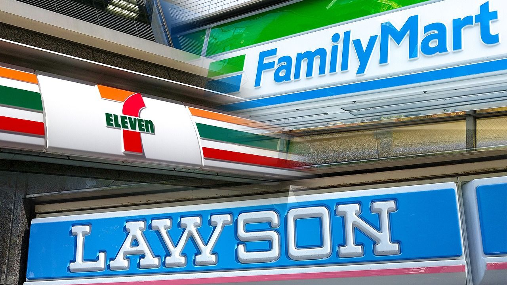
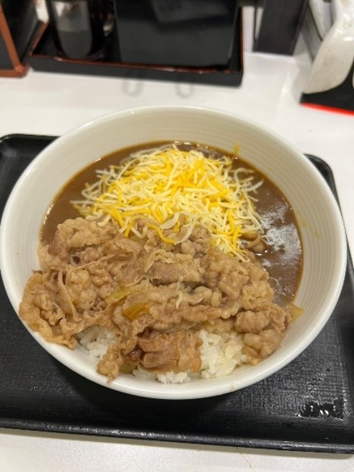
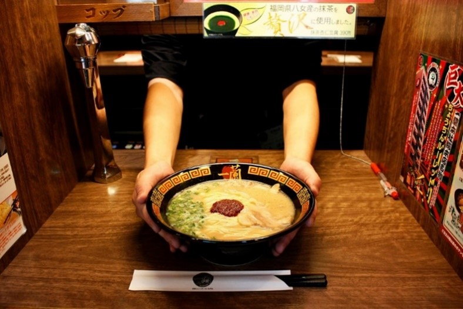

Dans cette section, je vous présente des lieux ou activités où l’on peut trouver un peu partout au Japon ou du moins dans les grandes villes du pays au soleil levant.
1. GiGO
À l’intérieur, tu trouveras plusieurs étages remplis de bornes d’arcade dernier cri, de jeux de rythme, de purikura (photomatons kawaii), et surtout des UFO catchers géants. Ces fameuses machines à pince sont remplies de peluches, figurines et goodies en édition limitée, beaucoup de visiteurs y passent des heures à essayer de décrocher le prix parfait.
L’ambiance est électrique : néons, musique, bruit des machines… c’est une vraie plongée dans la culture gaming japonaise. GiGO, c’est à la fois un terrain de jeu pour les passionnés et une expérience fun pour les curieux.
De mon côté j’allais surtout à Gigo pour essayer des UFO catcher avec ma sœur afin de gagner des goodies, figurines ou peluches ! Sinon la salle d’arcade dans l’espace jeux vidéo vous verrez qu’il y aura beaucoup de japonais(es) qui try hard les jeux, qui viennent avec leurs gants et écouteurs aux oreilles pour rester concentré, c’est super impressionnant !
2. Kura Sushi vs Sushiro
Kura Sushi et Sushiro sont deux chaînes de restauration de sushis. Je vais donc vous donner mon avis et vous dire ce qui différencie ces deux enseignes. Ne passons pas par 4 chemins, j’ai une préférence pour Kura Sushi personnellement car il se démarque surtout par son système de jeu : à chaque assiette (tous ls 5 assiettes) on peut jouer à un mini-jeu et gagner des petits cadeaux qu’ils nous envoient dans un gashapon (portes clés, autocollants, …). On est quasiment sûr de gagner au moins une fois par repas. Sur les deux fois où je suis allé, on a remporté un cadeau et la deuxième fois on a gagné 2 cadeaux avec 55 assiettes pour 4 personnes.
Mais parlons sushis, je trouve personnellement, les sushis de Kura un peu meilleur que ceux de Sushiro mais ça reste sur du même niveau en fonction du goût de tout le monde. En termes de prix, c’est quasiment équivalent, ça peut aller d’une centaine de yens pour une assiette à plus de 500 yens.
Attention ! Je vous mets en garde dès à présent, si vous voulez manger dans un de ces deux enseignes, n’allez surtout pas en heure de pointe ou sinon vous devrez prendre un ticket et faire énormément d’heures d’attente. Par exemple, quand nous étions partis à 19h, il a fallu qu’on patiente jusqu’à 22h pour espérer avoir une place ! Donc je vous conseille vivement de réserver votre place plus tôt !
En définitive, je trouve que Kura Sushi se démarque grâce à son originalité en faisant forte impression avec une expérience amusante et pas seulement le sushi.
3. Les konbini au Japon : Lawson, 7-Eleven & FamilyMart
Quand on parle du Japon, impossible de passer à côté des konbini, ces supérettes ouvertes tôt, fermées tard, parfois 24h/24 (j’aimerais trop avoir ça en France). Parmi les plus célèbres : Lawson, 7-Eleven et FamilyMart. Voici leurs caractéristiques :
- Lawson
- Ambiance souvent plus cosy et moderne.
- Produits phares : bentos, onigiri, sandwiches frais, desserts créatifs (pudding, roll cake…).
- Lawson propose aussi des collabs exclusives avec anime et jeux vidéo, parfait pour ramener un petit souvenir. J’avais acheté un booster de cartes Dragon Ball ici je crois !
- 7-Eleven
- La plus répandue au Japon, tu en trouveras partout.
- Produits : onigiri, boissons, snacks, cafés à emporter, services pratiques comme photocopies et retrait d’argent.
- Connue pour sa fiabilité et sa constance : même si tu changes de quartier, tu sais ce que tu vas trouver.
- FamilyMart
- Ambiance jeunesse et animée.
- Produits : bentos variés, desserts originaux, boissons en édition limitée.
- Souvent des offres saisonnières et collabs anime, et ils ont parfois des coins café où l’on peut s’asseoir pour manger ou des boissons chaudes à emporter.
En pratique : Ces trois chaînes proposent presque les mêmes services et produits, mais chacune a ses petites exclusivités et ambiances. C’est un passage obligé pour goûter des snacks typiques, acheter un repas rapide, ou découvrir des éditions limitées de boissons et sucreries japonaises.
Je vous conseille de tester les 3, déjà pour goûter à tout ce qu’ils vous proposent et aussi pour découvrir ce qui les différencie des autres konbini, vous allez sûrement en préférer un parce qu’il a des bons onigiris ou l’autre car il a de bonnes pâtisseries !
4. McDonald’s
Oui oui, le mec vous fait un guide du Japon pour vous présenter des activités JAPONAISES et il vous propose un McDo… Oui mais en vrai il faut vraiment que vous essayez au moins un McDo au Japon !
Premier argument, les burgers ne sont pas les mêmes, je vous conseille notamment les Shrimp Filet-O (burger aux crevettes frits) et les Teriyaki McBurger (burger au poulet sucré), ce sont des burgers uniques trouvables uniquement au Japon (on n’en parle pas de la série Croquez le Monde de McDo en France où le Teriyaki Chicken n’est absolument pas pareil que celui au Japon ! Scandaleux.).
Deuxième argument, le prix d’un menu en France équivaut à deux menus au Japon, ce n’est vraiment pas cher !
Dernier argument, les petits déjs là-bas sont 10000 fois mieux qu’en France (bon, j’abuse un peu), si un jour vous avez la flemme d’aller prendre un nième onigiri au Konbini le matin, allez tester le petit déj au McDo vous n’allez pas le regretter !
Bon, j’ai décidé de ne pas vous montrer les photos des burgers où j’ai croqué dedans pour les âmes sensibles…
5. JINS
Si tu es au Japon et que tu as une petite panne de lunettes ou envie d’une paire stylée sans dépenser une fortune, JINS est une adresse à ne pas manquer.
Alors pourquoi j’ai mis une boutique de lunettes dans mon magnifique guide du Japon ? Quelle est la différence par rapport à la France ?
Jins a un concept uniquement comparé à chez nous, les Français. En effet, le service au Japon est rapide et eficace, on arrive, on choisit une monture qu’on peut se faire valider par une IA qui scanne notre visage pour nous dire si la paire nous va bien ou pas, passer faire un test de vue sur place dans la boutique même et repartir directement 30 min après avec les paires si tout est bon !
Mes parents ont pu faire le test de vue et choisir si c’était possible ou pas d’avoir des verres anti-lumière bleue par exemple et ensuite on pouvait venir les récupérer 2-3h plus tard dans des lockers un peu à la manière de Vinted Go ou Mondial Relay, ce qui est super pratique car on peut sortir faire d’autres activités en attendant !
Ils font parfois aussi des collaborations, j’ai vu des lunettes en collab avec One Piece par exemple !
Adresse où je suis allé : Japon, 〒150-0042 Tokyo, Shibuya, Udagawacho, 31番1号
6. Yoshinoya
Si vous voulez manger à n’importe quelle heure de la journée et même après minuit et pour pas cher tout en étant très bon, je vous présente Yoshinoya. Un peu à la manière d’un konbini, c’est une grande chaîne de fast-foods ouvert 24h/24h un peu partout dans le Japon et vous propose une grande variété de plats ou même de petit-déj ou des prix allant jusqu’à 600 yens environ. Donc, un peu près 4€ maximum un plat super bon et qui te remplit bien le ventre ? N’est-ce pas le rêve qu’on rêverait d’avoir ça en France ?
7. Ichiran ramen
Une chaine de ramen incontournable au japon car on personnalise nos ramens en fonction de nos goûts (ex: la fermeté de la nouille, la texture du bouillon, pimenté ou pas, etc), il se trouve dans plusieurs villes. Il a la particularité d’avoir uniquement des tables seules face à un mur avec un rideau qui se lève avec quelqu’un qui vous tend votre ramen quand il est prêt !
Vous avez également un mini robinet avec de l’eau à volonté c’est mignon et génial à la fois. Je vous conseille de goûter leur fameux flan a matcha en dessert qui est absolument trop bon avec son coulis de matcha (encore) ! Toutefois, je vous mets en garde, vous aurez probablement beaucoup de queue à faire car il y a vraiment beaucoup, beaucoup de monde, je suis allé à deux Ichiran ramen et j’ai attendu environ 40 min à 1 heure avant de déguster ce délicieux ramen mais je peux vous garantir que ça en vaut vraiment le coup de le tester au moins une fois, c’est un must !